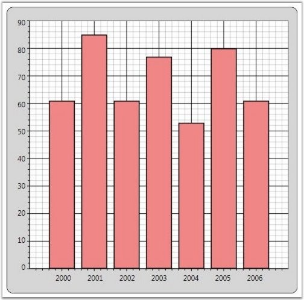

Chart for WPF provides various options to customize the look and feel of the Chart Series. The following are some of the properties that are used for this purpose.
Table 13: Property Table
|
Property |
Description |
|
Interior |
specifies the fill color of chart series |
|
Stroke |
specifies the border color of the chart series segment |
|
StrokeThickness |
specifies the thickness of the chart series segment border |
The following code example illustrates how to set the preceding properties.
|
[XAML]
<Window.Resources> <local:ProductSalesCollection x:Key="SeriesData1"/> </Window.Resources>
<sfchart:Chart> <sfchart:ChartArea> <sfchart:ChartSeries Type="Area" DataSource="{StaticResource SeriesData1}" BindingPathX="Year" BindingPathsY="Sales" Interior="LightCoral" Stroke="Black" StrokeThickness="1.5"/> </sfchart:ChartArea> </sfchart:Chart> |
|
[C#]
ChartSeries series = new ChartSeries(); series.DataSource = new ProductSalesCollection(); series.BindingPathX = "Year"; series.BindingPathsY = new string[] { "Sales" }; series.Interior = Brushes.LightCoral; series.Stroke = Brushes.Black; series.StrokeThickness = 1.5; Chart1.Areas[0].Series.Add(series); |

Figure 86: Interior = "LightCoral"; Stroke = "Black"; StrokeThickness = "1.5"
See Also